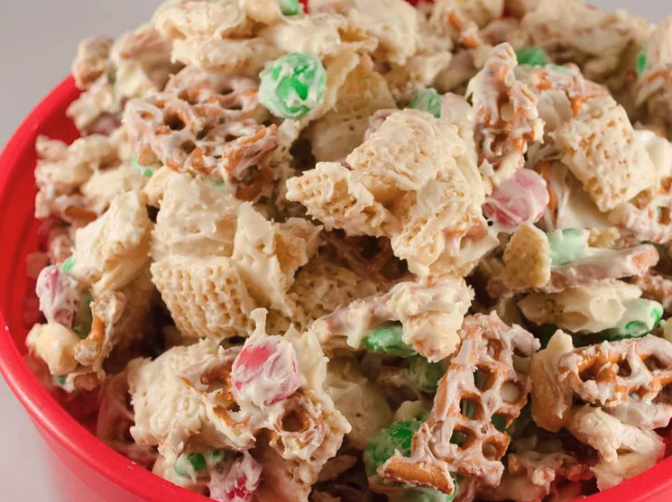

Reindeer Munch

An easy dessert with rice crispies
Easy and fun to make this snack with the kids.
Ideal replacement to the cookies for Santa!
Ingredients
- 2 cups crispy rice cereal squares (such as Rice Chex®)
- 2 cups thin pretzel sticks
- 1 cup cocktail peanuts
- 1 cup candy-coated milk chocolate pieces (such as M&M's®)
- 1 (12 ounce) package white vanilla baking chips
Steps
-
Stir cereal squares, pretzel sticks, peanuts, and milk chocolate pieces together in a large bowl.
-
Melt the vanilla baking chips in a microwave-safe glass or ceramic bowl in 30-second intervals,
stirring after each melting, for 1 to 3 minutes (depending on your microwave).
- Drizzle melted chips over cereal mixture. Pour mixture out onto a large piece
of aluminum foil and cool for 30 minutes.
-
Break into bite-size pieces and enjoy!